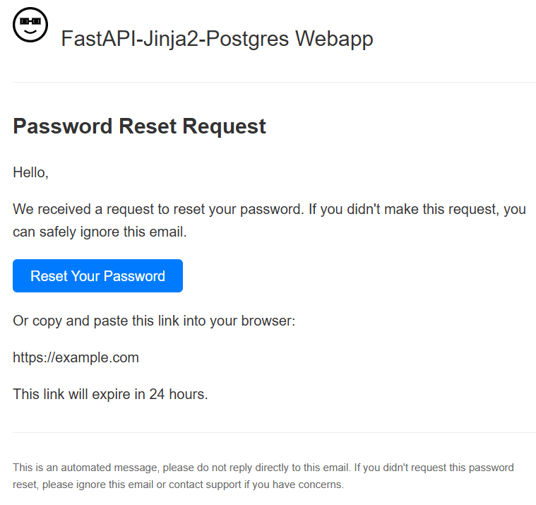
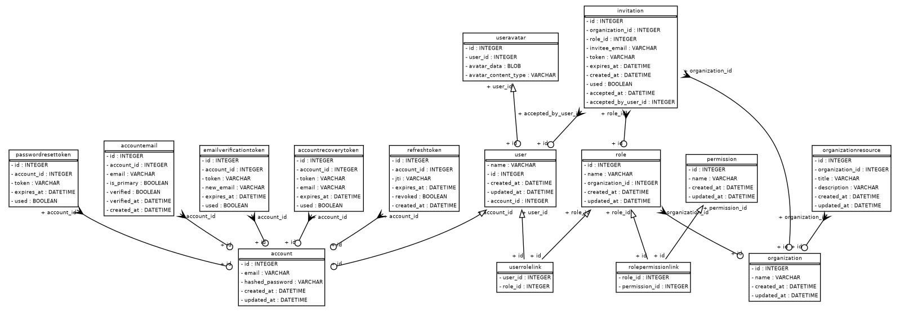

Customization
Development workflow
Dependency management with uv
The project uses uv to manage dependencies:
- Add new dependency:
uv add <dependency> - Add development dependency:
uv add --dev <dependency> - Remove dependency:
uv remove <dependency> - Update lock file:
uv lock - Install all dependencies:
uv sync - Install only production dependencies:
uv sync --no-dev - Upgrade dependencies:
uv lock --upgrade
IDE configuration
If you are using VSCode or Cursor as your IDE, you will need to select the uv-managed Python version as your interpreter for the project. Go to View > Command Palette, search for Python: Select Interpreter, and select the Python version labeled ('.venv':venv).
If your IDE does not automatically detect and display this option, you can manually select the interpreter by selecting “Enter interpreter path” and then navigating to the .venv/bin/python subfolder in your project directory.
Testing
The project uses Pytest for unit testing. It’s highly recommended to write and run tests before committing code to ensure nothing is broken!
The following fixtures, defined in tests/conftest.py, are available in the test suite:
engine: Creates a new SQLModel engine for the test database.set_up_database: Sets up the test database before running the test suite by dropping all tables and recreating them to ensure a clean state.session: Provides a session for database operations in tests.clean_db: Cleans up the database tables before each test by deleting all entries in thePasswordResetToken,EmailUpdateToken,User,Role,Organization, andAccounttables.test_account: Creates a test account with a predefined email and hashed password.test_user: Creates a test user in the database linked to the test account.auth_client: Provides aTestClientinstance with access and refresh token cookies set, overriding theget_sessiondependency to use thesessionfixture.unauth_client: Provides aTestClientinstance without authentication cookies set, overriding theget_sessiondependency to use thesessionfixture.test_organization: Creates a test organization for use in tests.
To run the tests, use these commands:
- Run all tests:
uv run pytest - Run tests in debug mode (includes logs and print statements in console output):
uv run pytest -s - Run particular test files by name:
uv run pytest <test_file_name> - Run particular tests by name:
uv run pytest -k <test_name>
Type checking with mypy
The project uses type annotations and mypy for static type checking. To run mypy, use this command from the root directory:
mypy .We find that mypy is an enormous time-saver, catching many errors early and greatly reducing time spent debugging unit tests. However, note that mypy requires you type annotate every variable, function, and method in your code base, so taking advantage of it requires a lifestyle change!
Developing with LLMs
In line with the llms.txt standard, we have provided a Markdown-formatted prompt—designed to help LLM agents understand how to work with this template—as a text file: llms.txt.
One use case for this file, if using the Cursor IDE, is to rename it to .cursorrules and place it in your project directory (see the Cursor docs on this for more information). Alternatively, you could use it as a custom system prompt in the web interface for ChatGPT, Claude, or the LLM of your choice.
We have also exposed the full Markdown-formatted project documentation as a single text file for easy downloading and embedding for RAG workflows.
Application architecture
Post-Redirect-Get pattern
In this template, we use FastAPI to define the “API endpoints” of our application. An API endpoint is simply a URL that accepts user requests and returns responses. When a user visits a page, their browser sends what’s called a “GET” request to an endpoint, and the server processes it (often querying a database), and returns a response (typically HTML). The browser renders the HTML, displaying the page.
We also create POST endpoints, which accept form submissions so the user can create, update, and delete data in the database. This template follows the Post-Redirect-Get (PRG) pattern to handle POST requests. When a form is submitted, the server processes the data and then returns a “redirect” response, which sends the user to a GET endpoint to re-render the page with the updated data. (See Architecture for more details.)
Customizable folders and files
- FastAPI application entry point and homepage GET route:
main.py - FastAPI routes:
routers/- Account and authentication endpoints:
account.py - User profile management endpoints:
user.py - Organization management endpoints:
organization.py - Role management endpoints:
role.py - Dashboard page:
dashboard.py - Static pages (e.g., about, privacy policy, terms of service):
static_pages.py
- Account and authentication endpoints:
- Jinja2 templates:
templates/ - Static assets:
static/ - Unit tests:
tests/ - Test database configuration:
docker-compose.yml - Helper functions:
utils/- Auth helpers:
auth.py - Database helpers:
db.py - FastAPI dependencies:
dependencies.py - Enums:
enums.py - Image helpers:
images.py - Database models:
models.py
- Auth helpers:
- Exceptions:
exceptions/- HTTP exceptions:
http_exceptions.py - Other custom exceptions:
exceptions.py
- HTTP exceptions:
- Environment variables:
.env.example - CI/CD configuration:
.github/ - Project configuration:
pyproject.toml - Quarto documentation:
- README source:
index.qmd - Website source:
index.qmd+docs/ - Configuration:
_quarto.yml
- README source:
Most everything else is auto-generated and should not be manually modified.
Backend
Code conventions
The GET route for the homepage is defined in the main entry point for the application, main.py. The entrypoint imports router modules from the routers/ directory, which contain the other GET and POST routes for the application. In CRUD style, the router modules are named after the resource they manage, e.g., account.py for account management.
We name our GET routes using the convention read_<name>, where <name> is the name of the resource, to indicate that they are read-only endpoints that do not modify the database. In POST routes that modify the database, you can use the get_session dependency as an argument to get a database session.
Routes that require authentication generally take the get_authenticated_account dependency as an argument. Unauthenticated GET routes generally take the get_optional_user dependency as an argument. If a route should only be seen by authenticated users (i.e., a login page), you can redirect to the dashboard if get_optional_user returns a User object.
Context variables
Context refers to Python variables passed to a template to populate the HTML. In a FastAPI GET route, we can pass context to a template using the templates.TemplateResponse method, which takes the request and any context data as arguments. For example:
@app.get("/welcome")
async def welcome(request: Request):
return templates.TemplateResponse(
request,
"welcome.html",
{"username": "Alice"}
)In this example, the welcome.html template will receive two pieces of context: the user’s request, which is always passed automatically by FastAPI, and a username variable, which we specify as “Alice”. We can then use the {{ username }} syntax in the welcome.html template (or any of its parent or child templates) to insert the value into the HTML.
Email templating
Password reset and other transactional emails are also handled through Jinja2 templates, located in the templates/emails directory. The email templates follow the same inheritance pattern as web templates, with base_email.html providing the common layout and styling.
Here’s how the default password reset email template looks:

The email templates use inline CSS styles to ensure consistent rendering across email clients. Like web templates, they can receive context variables from the Python code (such as reset_url in the password reset template).
Server-side form validation
Pydantic is used for data validation and serialization. It ensures that the data received in requests meets the expected format and constraints. Pydantic models are used to define the structure of request and response data, making it easy to validate and parse JSON payloads.
If a user-submitted form contains data that has the wrong number, names, or types of fields, Pydantic will raise a RequestValidationError, which is caught by middleware and converted into an HTTP 422 error response.
Middleware exception handling
Middlewares—which process requests before they reach the route handlers and responses before they are sent back to the client—are defined in main.py. They are commonly used in web development for tasks such as error handling, authentication token validation, logging, and modifying request/response objects.
This template uses middlewares exclusively for global exception handling; they only affect requests that raise an exception. This allows for consistent error responses and centralized error logging. Middleware can catch exceptions raised during request processing and return appropriate HTTP responses.
Middleware functions are decorated with @app.exception_handler(ExceptionType) and are executed in the order they are defined in main.py, from most to least specific.
Here’s a middleware for handling the PasswordMismatchError exception from the previous example, which renders the errors/validation_error.html template with the error details:
@app.exception_handler(PasswordValidationError)
async def password_validation_exception_handler(request: Request, exc: PasswordValidationError):
return templates.TemplateResponse(
request,
"errors/validation_error.html",
{
"status_code": 422,
"errors": {"error": exc.detail}
},
status_code=422,
)Database configuration and access with SQLModel
SQLModel is an Object-Relational Mapping (ORM) library that allows us to interact with our PostgreSQL database using Python classes instead of writing raw SQL. It combines the features of SQLAlchemy (a powerful database toolkit) with Pydantic’s data validation.
Models and relationships
Our database models are defined in utils/models.py. Each model is a Python class that inherits from SQLModel and represents a database table. The key models are:
Account: Represents a user account with email and password hashUser: Represents a user profile with details like name and avatar; the email and password hash are stored in the relatedAccountmodelOrganization: Represents a company or teamRole: Represents a set of permissions within an organizationPermission: Represents specific actions a user can perform (defined by ValidPermissions enum)PasswordResetToken: Manages password reset functionality with expirationEmailUpdateToken: Manages email update confirmation functionality with expiration
Two additional models are used by SQLModel to manage many-to-many relationships; you generally will not need to interact with them directly:
UserRoleLink: Maps users to their roles (many-to-many relationship)RolePermissionLink: Maps roles to their permissions (many-to-many relationship)
Here’s an entity-relationship diagram (ERD) of the current database schema, automatically generated from our SQLModel definitions:

Database helpers
Database operations are facilitated by helper functions in utils/db.py. Key functions include:
set_up_db(): Initializes the database schema and default data (which we do on every application start inmain.py)get_connection_url(): Creates a database connection URL from environment variables in.envget_session(): Provides a database session for performing operations
To perform database operations in route handlers, inject the database session as a dependency:
@app.get("/users")
async def get_users(session: Session = Depends(get_session)):
users = session.exec(select(User)).all()
return usersThe session automatically handles transaction management, ensuring that database operations are atomic and consistent.
There is also a helper method on the User model that checks if a user has a specific permission for a given organization. Its first argument must be a ValidPermissions enum value (from utils/models.py), and its second argument must be an Organization object or an int representing an organization ID:
permission = ValidPermissions.CREATE_ROLE
organization = session.exec(select(Organization).where(Organization.name == "Acme Inc.")).first()
user.has_permission(permission, organization)You should create custom ValidPermissions enum values for your application and validate that users have the necessary permissions before allowing them to modify organization data resources.
Cascade deletes
Cascade deletes (in which deleting a record from one table deletes related records from another table) can be handled at either the ORM level or the database level. This template handles cascade deletes at the ORM level, via SQLModel relationships. Inside a SQLModel Relationship, we set:
sa_relationship_kwargs={
"cascade": "all, delete-orphan"
}This tells SQLAlchemy to cascade all operations (e.g., SELECT, INSERT, UPDATE, DELETE) to the related table. Since this happens through the ORM, we need to be careful to do all our database operations through the ORM using supported syntax. That generally means loading database records into Python objects and then deleting those objects rather than deleting records in the database directly.
For example,
session.exec(delete(Role))will not trigger the cascade delete. Instead, we need to select the role objects and then delete them:
for role in session.exec(select(Role)).all():
session.delete(role)This is slower than deleting the records directly, but it makes many-to-many relationships much easier to manage.
Frontend
HTML templating with Jinja2
To generate the HTML pages to be returned from our GET routes, we use Jinja2 templates. Jinja2’s hierarchical templates allow creating a base template (templates/base.html) that defines the overall layout of our web pages (e.g., where the header, body, and footer should go). Individual pages can then extend this base template. We can also template reusable components that can be injected into our layout or page templates.
With Jinja2, we can use the {% block %} tag to define content blocks, and the {% extends %} tag to extend a base template. We can also use the {% include %} tag to include a component in a parent template. See the Jinja2 documentation on template inheritance for more details.
Custom theming with Bootstrap
Install Node.js on your local machine if it is not there already.
Install bootstrap, sass, gulp, and gulp-sass in your project:
npm install --save-dev bootstrap sass gulp gulp-cli gulp-sassThis will create a node_modules folder, a package-lock.json file, and a package.json file in the root directory of the project.
Create an scss folder and a basic scss/styles.scss file:
mkdir scss
touch scss/styles.scssYour custom styles will go in scss/styles.scss, along with @import statements to include the Bootstrap components you want.
Customizing the Bootstrap SCSS
The default CSS for the template was compiled from the following scss/styles.scss configuration, which imports all of Bootstrap and overrides the $theme-colors and $font-family-base variables:
// styles.scss
// Include any default variable overrides here (functions won't be available)
// State colors
$primary: #7464a1;
$secondary: #64a19d;
$success: #67c29c;
$info: #1cabc4;
$warning: #e4c662;
$danger: #a16468;
$light: #f8f9fa;
$dark: #343a40;
// Bootstrap color map
$theme-colors: (
"primary": $primary,
"secondary": $secondary,
"success": $success,
"info": $info,
"warning": $warning,
"danger": $danger,
"light": $light,
"dark": $dark
);
$font-family-base: (
"Nunito",
-apple-system,
BlinkMacSystemFont,
"Segoe UI",
Roboto,
"Helvetica Neue",
Arial,
sans-serif,
"Apple Color Emoji",
"Segoe UI Emoji",
"Segoe UI Symbol",
"Noto Color Emoji"
);
// Include all of Bootstrap
@import "../node_modules/bootstrap/scss/bootstrap";The most common use case for styles.scss is to define a custom color scheme and fonts, but it’s also possible to customize some other visual details such as border radius and box shadow depth. See the Bootstrap Sass customization documentation and the many free templates available at Start Bootstrap for examples.
Compiling the SCSS to CSS
To compile the SCSS files to CSS, we use gulp. In the project root directory, create a gulpfile.js file with the following content:
const gulp = require('gulp');
const sass = require('gulp-sass')(require('sass'));
// Define a task to compile Sass
gulp.task('sass', function() {
return gulp.src('scss/**/*.scss') // Source folder containing Sass files
.pipe(sass().on('error', sass.logError))
.pipe(gulp.dest('static/css')); // Destination folder for compiled CSS
});
// Define a default task
gulp.task('default', gulp.series('sass'));To compile the SCSS file to static/css, run this command:
npx gulpNote that this will overwrite the existing static/css/styles.css file, so if you want to define any custom CSS styles, you should do so in either the scss/styles.scss file or in static/css/extras.css.
Client-side form validation
While this template includes comprehensive server-side validation through Pydantic models and custom validators, it’s important to note that server-side validation should be treated as a fallback security measure. If users ever see the validation_error.html template, it indicates that our client-side validation has failed to catch invalid input before it reaches the server.
Best practices dictate implementing thorough client-side validation via JavaScript and/or HTML input element pattern attributes to:
- Provide immediate feedback to users
- Reduce server load
- Improve user experience by avoiding round-trips to the server
- Prevent malformed data from ever reaching the backend
Server-side validation remains essential as a security measure against malicious requests that bypass client-side validation, but it should rarely be encountered during normal user interaction. See templates/authentication/register.html for a client-side form validation example involving both JavaScript and HTML regex pattern matching.